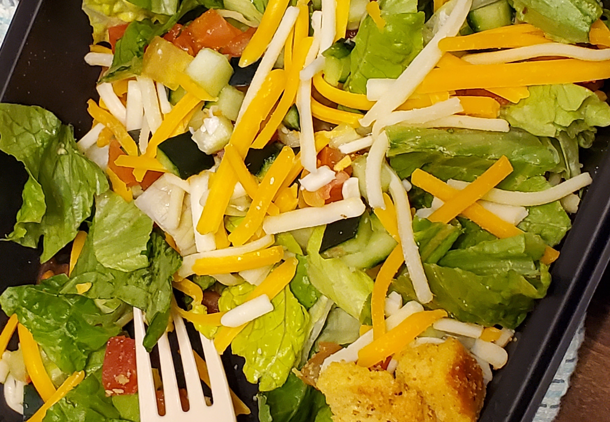
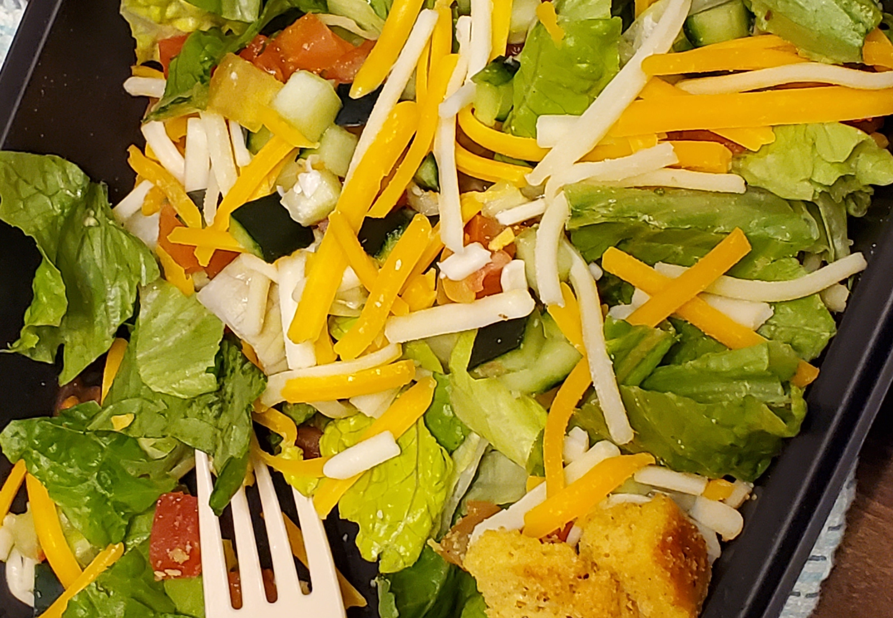

10,000 Lakes
I entered Minnesota today, it is called the state of 10,000 lakes. Indeed, there are so many lakes here, I am currently staying near the Madison Lake. Today I visited the Big Birch lake as well. Unfortunately, I forgot to turn on the time lapse mode of my Go Pro and ended up recording the entire trip as regular video, so there won't be a time lapse video today. Instead, I am posting the part where I crossed the Mississippi river and also the state border. I was thrilled when Google Map welcomed me saying “Welcome to Minnesota”!
 

Jahid came to visit me at Madison Lake and we had some fun time together, including a failed effort to light up a wood to make some fire. I took a picture of his and my car side by side, one from MA and one from MN, only a letter apart.